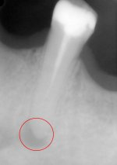
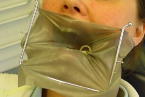
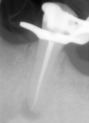
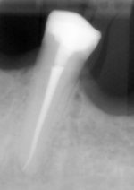

Behandelingen
De wortelkanaalbehandeling past in een aanpak om uw mond levenslang gezond te houden. Uw tandarts is hiervoor de coördinator. Uw tandarts maakte een behandelplan en/of volgt uw mondgezondheid op met het oog op een levenslange mondgezondheid. Hij of zij heeft een duidelijk zicht op uw mondgezondheid en is dus de aangewezen persoon om te bepalen of een wortelkanaalbehandeling zinvol en nodig is. De wortelkanaalbehandeling moet passen in een behandelplan/opvolgingsstrategie dat aan uw noden, wensen en middelen is aangepast. Om deze reden aanvaarden wij alleen verwijzingen van uw tandarts.
De theorie

Een ontsteking voor de wortelkanaalbehandeling
Tanden bestaan uit een kroon en een wortel. De kroon is bedekt met glazuur en is zichtbaar in de mond. De wortel zorgt voor een stevige verankering in het kaakbot. Aan de wortelpunt komt een zenuw en een bloedvat in de tand. Deze lopen in de wortelkanalen (in de wortel) tot aan de pulpaholte (onder de kroon).
Als de bacteriën van een diepe cariës (gaatje) de zenuw en het bloedvat bereiken, zullen deze ontsteken. Dit gaat meestal gepaard met heel veel tandpijn. Soms gebeurt dit zonder pijn. Door de ontsteking zal uiteindelijk de zenuw afsterven. De bacteriën hebben dan vrij spel om zich in de pulpaholte en de wortelkanalen te vestigen. Om te vermijden dat de bacteriën het lichaam binnendringen, zal het lichaam een verdedigingslinie opbouwen aan elke uitgang van de wortelkanalen. Deze barrière is ook een ontsteking. Meestal geeft zo’n ontsteking niet veel last, maar bij veel stress of vermoeidheid, kan de ontsteking een abces worden. Dit gaat dan gepaard met veel pijn en een dik gezicht.
De wortelkanaalbehandeling heeft tot doel te vermijden dat de bacteriën zich in het wortelkanaal kunnen vestigen. Als de bacteriën al in het kanaal zitten, is het de bedoeling om de bacteriën en zenuwresten te verwijderen. Als het kanaal schoon is en blijft, zal de ontsteking aan de wortelkanaaluitgang vanzelf verdwijnen.
De praktijk

De tand wordt verdoofd, waardoor de behandeling meestal pijnloos verloopt. Daarna wordt de tand afgezonderd van de rest van de mond met een rubberdam (zie foto). Dit geeft vele voordelen. Omdat de tand afgezonderd is, kan de patiënt regelmatig slikken, zonder dat de tand besmet wordt met speeksel, het open houden kan op een meer ontspannen manier. Een zuiger is overbodig, waardoor de patiënt geen droge mond krijgt. Vervolgens wordt onder de microscoop alle cariës (aangetast tandweefsel) weggehaald en de ingangen van de kanalen worden gezocht. De vergroting van de microscoop biedt hier een enorm voordeel om geen kanalen over het hoofd te zien. Nu kan het eigenlijke reinigen van de wortelkanalen beginnen. Met flexibele vijlen worden de wortelkanalen verbreed. Zowel tijdens als na het verbreden worden de kanalen overvloedig uitgespoeld met verschillende ontsmettingsmiddelen, waarvan NaOCl (Javel) het belangrijkste is.
Als de kanalen voldoende gereinigd zijn tot aan de wortelpunt, worden ze gedroogd en opgevuld. Het opvullen gebeurt met warme guttapercha (soort rubber). De warme guttapercha maakt het mogelijk de soms grillige vormen van de wortelkanalen te vullen.
Na het definitief vullen van de wortelkanalen wordt de kroon voorlopig gevuld. Er dient dan een afspraak te worden gemaakt voor de definitieve restauratie bij de eigen tandarts. Dit kan een vulling zijn, maar in vele gevallen is een kroon aan te raden. Bespreek dit met uw eigen tandarts. Tijdens de behandeling worden af en toe röntgen-foto’s genomen om het verloop en het resultaat van de behandeling te controleren.
Wat is een herbehandeling?

De ontsteking na de wortelkanaalbehandeling
In dit geval zitten er nog of opnieuw bacteriën in de reeds gevulde wortelkanalen. Een herbehandeling is technisch heel wat moeilijker omdat de oude wortelkanaalvulling verwijderd dient te worden. Door het gebruik van de microscoop en ander modern instrumentarium is het toch goed mogelijk om de kanalen met succes opnieuw te reinigen en te vullen.
Leidt de behandeling altijd tot genezing?
Als er op de röntgenfoto nog geen ontsteking zichtbaar is, is het slaagpercentage van een goed uitgevoerde wortelkanaalbehandeling 95%. In het geval er ontsteking zichtbaar is op de röntgenfoto, zakt het slaagpercentage naar 85%.
Zijn er andere complicaties aanwezig,dan zakt het slaagpercentage verder tot 50%.
Wat als de ontsteking na de wortelkanaalbehandeling niet geneest?
Geneest de ontsteking niet na de wortelkanaalbehandeling dan zit het probleem vaak aan de wortelpunt, die door zijn grillige vorm niet goed gereinigd kon worden.
Het kan ook zijn dat de bacteriën zich buiten de tand gevestigd hebben. Dit probleem kan opgelost worden door de wortelpunt en de ontsteking (met bacteriën) chirurgisch te verwijderen. Ook dit doen we onder begeleiding van de microscoop om zo de oorzaak beter te kunnen inschatten en de behandeling zo weefselvriendelijk te laten verlopen. Tijdens de chirurgische behandeling wordt meestal ook een deel van de wortelvulling verwijderd en opnieuw gevuld om zeker een goede afdichting te hebben. Bij een chirurgische behandeling van de wortelpunt, onderbegeleiding van de microscoop is de kans op genezing ook 85%. Als de instructies (o.a. ijs leggen) goed gevolgd worden geeft de ingreep verbazend weinig nalast.
Zijn er alternatieven?
Heeft een tand een wortelkanaalbehandeling nodig, dan is het trekken van de tand het enige alternatief. De tand kan dan vervangen worden door een implantaat met kroon, een brug of een uitneembare voorziening. Uw tandarts kan u hier over meer advies geven.
Geeft de behandeling napijn?

De ontsteking, genezen na 1 jaar
De wortelkanaalbehandeling geeft over het algemeen weinig napijn. Uiteraard zal de napijn erger zijn naarmate men voor de behandeling al pijn had. Meestal is de pijn goed te onderdrukken met een pijnstiller en duurt die maar een paar dagen. In heel sommige gevallen treedt na de behandeling zwelling op. Als is het geval is, dient u contact op te nemen met de endodont of uw eigen tandarts.
Kan de tand nadien nog lang meegaan?
Door de wortelkanaalbehandeling wordt de tand niet broser, maar door de uitgebreide cariës is de tand verzwakt. Een kroon kan de sterkte van uw tand herstellen. Bespreek dit met uw eigen tandarts.
Duurt de behandeling lang?
De hele behandeling is een secuur werkje. De behandeling duurt dan ook vrij lang. Afhankelijk van het aantal wortels, een redo of niet, zeer kromme wortel,… zijn tussen de 45 min en 2 uur nodig. Vraag bij het maken van de afspraak naar de gereserveerde tijd.
Links
Meer uitleg over wortelkanaalbehandelingen (op Tandarts.nl)